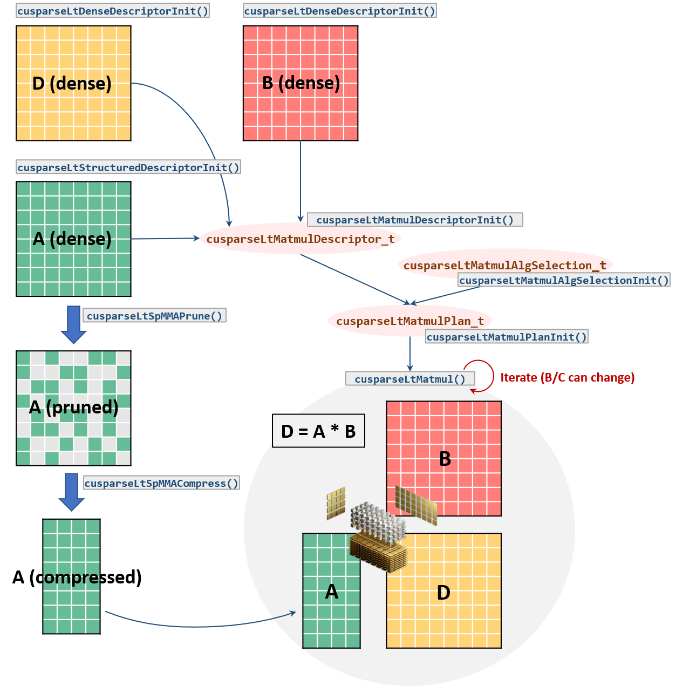

GPU MODE Lecture 11: Sparsity
- GPU MODE Lecture Notes: My notes from the GPU MODE reading group lectures run by Andreas Kopf and Mark Saroufim.
- Introduction
- The Performance Challenge of Sparsity
- Unstructured Sparsity and Its Limitations on GPUs
- Semi-structured Sparsity (2:4 Sparsity)
- Block Sparsity
- Composing Sparsity with Quantization
- Sparse Training
- Future Directions and Research Areas
- Conclusion
- YouTube Recording: Lecture 11: Sparsity
- Slides: GPU Sparsity
Introduction
- Speaker: Jesse Cai
Sparsity and Pruning: Core Concepts
Sparsity in neural networks refers to the presence of a significant number of zero-valued weights.
Pruning is the process of intentionally removing these zero-valued or insignificant weights from the network.
The goal is to reduce computational cost and memory footprint without significantly impacting model accuracy.
This is achieved in two steps:
- Zeroing out weights: Identify and set insignificant weights to zero.
- Accelerating computation: Develop methods to efficiently perform calculations with zero-valued weights (e.g., skipping multiplication by zero).
Historical Context and Renewed Interest
- The concept of pruning dates back to the “Optimal Brain Damage” paper from 1989.
- Renewed interest emerged with the rise of deep learning and large models like AlexNet in 2012.
- The increasing size of modern models, especially in the context of LLMs and Gen AI, has further intensified the need for sparsity and pruning techniques.
The Performance Challenge of Sparsity
Multiplying by Zero: The Ideal vs. Reality
- The fundamental principle of sparsity relies on the fact that multiplying by zero is inherently faster than multiplying by non-zero values.
- However, simply having zero-valued weights doesn’t guarantee speedups. The way computation is performed is crucial.
- Naive approaches: If multiplication by zero is treated the same as multiplication by any other number (e.g., performing the full multiplication steps), no significant performance gain is achieved.
Sparsity Patterns and the GPU Trade-off
- The challenge: Achieving optimal performance with sparse models on GPUs requires balancing two competing factors:
- Flexibility: Allowing for a wide range of sparsity patterns to minimize the impact on accuracy.
- Efficient Computation: Ensuring that the chosen sparsity pattern can be efficiently processed on the parallel architecture of GPUs.
- Types of Sparsity:
- Unstructured Sparsity: No constraints on the location of zero-valued weights. Offers high flexibility but can be challenging to accelerate on GPUs.
- Structured Sparsity: Zeros are arranged in specific patterns (e.g., entire rows, columns, or filters). Easier to accelerate but may significantly impact accuracy.
- Semi-structured Sparsity (2:4 Sparsity): An intermediate approach where two out of every four elements are zero. Offers a balance between flexibility and performance. Well-supported on GPUs.
- Block Sparsity: Zeros are grouped into blocks (e.g., 32x32). Provides good performance but requires more complex algorithms for accuracy recovery.
Unstructured Sparsity and Its Limitations on GPUs
Sparse Representations and Kernels
- To make unstructured sparsity efficient, data is stored in sparse representations (e.g., coordinate format).
- Documentation: torch.sparse
- Coordinate Format Example:
- Dense Matrix: Stored contiguously in memory.
- Sparse Matrix (Coordinate Format): Only non-zero elements are stored along with their indices. This reduces memory footprint when the matrix is sufficiently sparse.
- Sparse kernels are used to perform computations directly on these sparse representations, skipping multiplications by zero.
Challenges on GPUs
- High Sparsity Requirement: CPU sparsity is generally only faster at extremely high sparsity levels (greater than 99%).
- GPU Limitations: Dense matrix multiplication is significantly faster on GPUs due to their parallel nature.
- This makes it even harder for unstructured sparsity to achieve speedups on GPUs, as the parallelization benefits are lost with highly irregular sparsity patterns.
- Need for Structure: To achieve performance gains on GPUs, some form of structure in the sparsity pattern is necessary to enable efficient parallelization.
Semi-structured Sparsity (2:4 Sparsity)
Characteristics
Fixed Sparsity Level: 50% of the elements are zero.
Pattern: Two out of every four elements within a block are zero.

Slide 9 Accuracy Recovery: NVIDIA research suggests that accuracy can be effectively recovered with a simple “prune once, retrain” approach.
Implementation in PyTorch
Integration: Semi-structured sparsity is supported in PyTorch.
- Documentation: torch.sparse
Backends:
CUTLASS: NVIDIA’s CUDA Templates library provides native instructions for 2:4 sparse operations.
cuSPARSELt: NVIDIA’s library specifically designed for sparse linear algebra operations. Offers additional features and potential performance improvements.

Slide 10
Performance:
- Theoretical Maximum Speedup: 2x due to halving the number of non-zero elements.
- Practical Average Speedup: Around 1.6x due to overheads like loading metadata (bitmask) and matrix shape dependencies.
Example Usage in PyTorch
import torch
from torch.sparse import to_sparse_semi_structured, SparseSemiStructuredTensor
# Sparsity helper functions
def apply_fake_sparsity(model):
"""
This function simulates 2:4 sparsity on all linear layers in a model.
It uses the torch.ao.pruning flow.
"""
# torch.ao.pruning flow
from torch.ao.pruning import WeightNormSparsifier
sparse_config = []
for name, mod in model.named_modules():
if isinstance(mod, torch.nn.Linear):
sparse_config.append({"tensor_fqn": f"{name}.weight"})
sparsifier = WeightNormSparsifier(sparsity_level=1.0,
sparse_block_shape=(1,4),
zeros_per_block=2)
sparsifier.prepare(model, sparse_config)
sparsifier.step()
sparsifier.step()
sparsifier.squash_mask()
def apply_sparse(model):
apply_fake_sparsity(model)
for name, mod in model.named_modules():
if isinstance(mod, torch.nn.Linear):
mod.weight = torch.nn.Parameter(to_sparse_semi_structured(mod.weight))Limitations and Workarounds
- First Matrix Sparsity Only: Current implementations only support sparsity in the first matrix of a matrix multiplication, not the second.
- Impact on PyTorch Linear Layers: PyTorch linear layers are defined as XWT, requiring a transpose operation when using semi-structured sparsity.
- Transpose Overhead: The transpose can introduce performance overhead due to data copying.
- Torch.compile Mitigation: Torch.compile can fuse the transpose with subsequent operations (e.g., ReLU) to reduce overhead.
- Current Fusion Limitations: Torch.compile cannot currently fuse operations directly into the sparse matrix multiplication kernel (cuSPARSELt). This limits potential performance gains.
Block Sparsity
Characteristics
- Variable Sparsity Level: The sparsity level can be adjusted (e.g., 90%).
- Pattern: Zeros are grouped into blocks of a fixed size (e.g., 32x32).
- Accuracy Recovery: More complex algorithms are typically needed for accuracy recovery compared to 2:4 sparsity. Research in this area is ongoing.
Advantages for Vision Transformers
- Potential for Higher Speedups: Block sparsity can achieve speedups beyond 2x, especially at high sparsity levels.
- Example (Vision Transformers):
- 90% sparsity can lead to speedups of up to 3.4x.
- 1.4x speedup achieved on ImageNet with minimal accuracy loss (2 percentage points).
Challenges
- Accuracy Recovery: Finding effective methods to recover accuracy after block sparsity pruning remains an active research area.
- Limited Research: Compared to 2:4 sparsity, block sparsity on GPUs has received less attention, and optimal solutions are still being explored.
Composing Sparsity with Quantization
- GitHub Repository: torchao
Challenges and Fusion Issues
- Combining sparsity and quantization can lead to performance bottlenecks due to limitations in operator fusion.
- Fusion Breakdown:
- Ideal Scenario: A fully fused kernel would handle sparsity, quantization, matrix multiplication, and dequantization in a single operation.
- Current Limitations: Existing implementations (especially with cuSPARSELt) often result in multiple separate kernels, introducing overhead.
- Example:
- Baseline (BF16): 1600ms
- Sparsity: 1400ms
- Quantization: 1400ms
- Sparsity + Quantization (without optimal fusion): Marginal speedup (1420ms)
- Sparsity + Quantization (with partial fusion using cuSPARSELt alpha vectors): 1278ms (significant improvement)
Potential Solutions
- Fused Kernels: Developing custom fused kernels that handle sparsity and quantization together can significantly improve performance.
- CUTLASS vs. cuSPARSELt: CUTLASS offers more flexibility for creating custom fused kernels compared to the black-box nature of cuSPARSELt.
- Transpose Fusion: Integrating the transpose operation (needed for PyTorch linear layers) directly into the sparse kernel can further enhance performance.
Accuracy Considerations
- Accuracy Impact: Combining sparsity and quantization can lead to accuracy degradation.
- Research is ongoing to find the optimal balance between sparsity, quantization levels, and accuracy.
- Sparse GPT: One example of research in this area, exploring one-shot calibration methods to recover accuracy without retraining, which is particularly challenging for large LLMs due to memory constraints.
Sparse Training
Accelerating the Training Process
- Sparsity can also be applied during training to speed up the process.
- Fast Sparsification: Efficient algorithms (e.g., based on weight magnitude without sorting or branching) are used to quickly sparsify the weights or activations before each matrix multiplication.
- Performance Gains: The time taken for sparsification and sparse matrix multiplication can be less than the time for a dense matrix multiplication, leading to overall training speedups.
Example: xFormers and ImageNet
- Collaboration with xFormers: PyTorch has been working with the xFormers team to develop fast sparsification kernels.
- Results:
- 10-20% speedup in end-to-end ImageNet training with minimal accuracy loss (81.6% to 80.5%).
- Key Observations:
- Activation Sparsity: Applying sparsity to activations (after ReLU) often leads to better results than weight sparsity, as activations tend to be more naturally sparse.
- Matrix Shape Considerations: The effectiveness of sparsity can depend on the shapes of the matrices involved.
Differences Between Inference and Training
- Transpose Handling:
- Inference: Only one representation (either W or WT) is needed.
- Training: Both W and WT are required for the forward and backward passes. This can lead to a slight memory penalty when using sparse representations during training.
- Fused Transpose Requirement:
- Training: Fused transpose operations are crucial for performance. Currently, this functionality is only available in cuSPARSELt, making it essential for sparse training.
- Inference: Fused transpose is less critical as it can be handled by Torch.compile.
Future Directions and Research Areas
Combining Sparsity Patterns
- Exploring combinations of different sparsity patterns (e.g., 2:4 sparsity within blocks) could lead to further performance improvements.
- Challenges: This requires developing efficient algorithms and kernels that can handle these more complex patterns.
Flexible Sparsity with Shuffling
- Introducing shuffles into blockwise sparsity can increase flexibility while maintaining performance benefits.
- Shuffle Overhead: The shuffle operation itself can introduce overhead.
- Torch.compile Mitigation: Torch.compile can be used to fuse the shuffle with other operations, minimizing its impact.
Sparsity for Dropout
- 2:4 sparsity could potentially be used to implement dropout due to its inherent randomness and 50% sparsity level.
- Benefits: Achieving dropout-like regularization with the performance advantages of 2:4 sparsity.
CUDA-Specific Considerations
- Bridging the CUTLASS and cuSPARSELt Gap: Developing CUTLASS kernels with comparable functionality and performance to cuSPARSELt would offer greater flexibility and control over fusion and kernel optimization.
- Larger Fused Kernels: Exploring larger fused kernels that incorporate more operations (e.g., quantization, dequantization, transpose) within the sparse matrix multiplication can further enhance performance.
- Flexible Sparsity Patterns in CUTLASS: Implementing efficient shuffles or other techniques to enable more flexible sparsity patterns within CUTLASS kernels.
- Load as Sparse Kernels: For memory-bound workloads (e.g., LLMs), loading data in a sparse format and expanding to dense within the GPU could offer speedups by reducing memory transfer time.
Hardware Support for Sparsity
- Specialized hardware architectures could be designed to directly support sparse representations and operations, potentially leading to significant performance improvements.
- NVIDIA’s Tensor Cores: Semi-structured sparsity support in Tensor Cores suggests that hardware vendors are exploring such directions.
Conclusion
- Sparsity and pruning are promising techniques for improving the efficiency of large neural networks, especially in the context of LLMs and Gen AI.
- Accuracy remains a key challenge: Finding effective ways to recover accuracy after pruning is crucial for wider adoption.
- Performance gains are demonstrable: Especially with semi-structured and block sparsity on GPUs, significant speedups can be achieved.
- Ongoing research and development: The field is actively evolving, with new sparsity patterns, algorithms, and hardware support being explored.
- Potential for breakthroughs: As the research progresses and new tools become available, sparsity is likely to play an increasingly important role in making large models more practical and accessible.
- I’m Christian Mills, a deep learning consultant specializing in computer vision and practical AI implementations.
- I help clients leverage cutting-edge AI technologies to solve real-world problems.
- Learn more about me or reach out via email at christian@christianjmills.com to discuss your project.